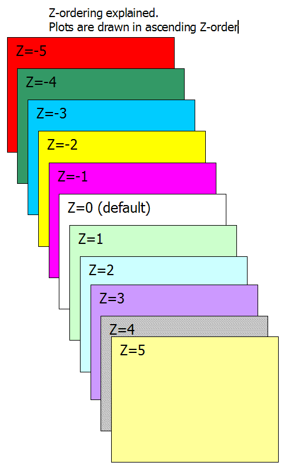

Introduction
What is Z-order?
Imagine that you could see the drawing objects arranged on the chart page like
puzzle pieces on a table. Some objects may appear to be placed one on top
of another, and others may be overlapping.
This third dimension of the chart page is known as "Z order." If the
X axis relates to width and the Y axis to height, then the Z order relates
to depth. Although Z order cannot be seen directly, just as you can position
objects along X and Y (horizontal and vertical) axes, you can also position
them in the Z order.
Every object on the page has its Z order, positioned in back-to-front order,
so that objects at the front will take precedence over objects behind them.
Z order gives you the ability to superimpose objects one on top of another.
Usage
Z-order is a parameter that defines the Z-axis position of a given plot/drawing.
Z-order parameter can be passed to Plot(), PlotOHLC() and PlotForeign() AFL functions and can be set from the user interface for any manual drawing tool.
You can change the Z-order parameter for drawing tools using the Properties dialog as well as using the Format->Z-Order->Bring Forward / Send Backward menus (and default keystrokes Shift+Page Up and Shift+Page Down).
The default z-order value is zero. Z-order = 0 also means where the "grid" is located. So if you want to plot BEHIND the grid, you need to specify a negative z-order parameter. Smaller values are drawn first (i.e., BEHIND others), higher values are drawn later (ON TOP of others).
Plots are drawn in the following order:

Please note
the above applies to each Z-order "layer" separately (so
within the same Z-order "layer" reverse call rule applies)
Example (Bollinger Bands with "cloud" fill behind price (Z-order
= -1)):
P = ParamField("Price
field",-1);
Periods = Param("Periods", 15, 2, 100, 1 );
Width = Param("Width", 2, 0, 10, 0.05 );
Color = ParamColor("Color", colorLightGrey );
Style = ParamStyle("Style")
| styleNoRescale;;
Plot( bbt = BBandTop(
P, Periods, Width ), "BBTop" + _PARAM_VALUES(),
Color, Style );
Plot( bbb = BBandBot(
P, Periods, Width ), "BBBot" + _PARAM_VALUES(),
Color, Style );
PlotOHLC( bbt,
bbt, bbb, bbb, "", ColorBlend(
Color, colorWhite, 0.9 ), styleCloud, Null, Null, Null,
-1 );